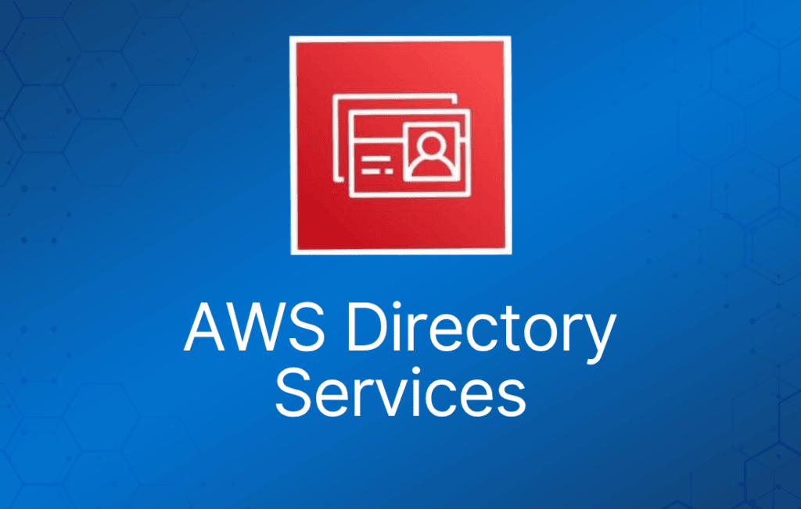
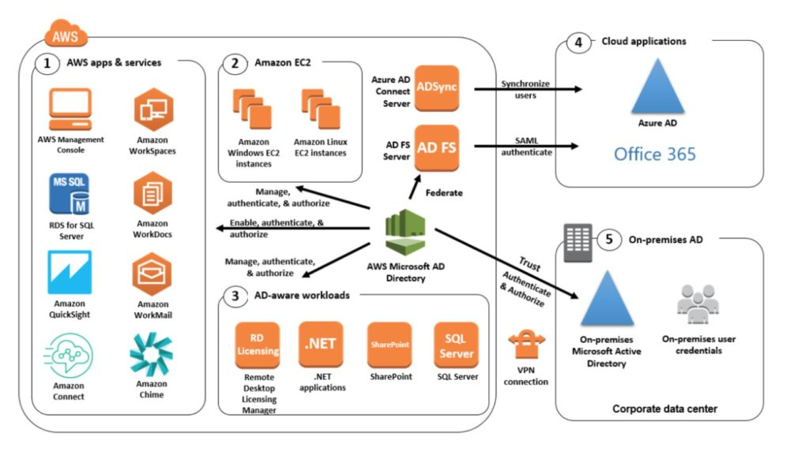

AWS 提供多种目录类型。
目前考试中涉及以下三种类型，本页将进行介绍：
- Active Directory Service for Microsoft Active Directory。
- Simple AD。
- AD Connector。
除了 AWS Directory 服务之外，你也可以在 AWS 云中（EC2 上）自建 Microsoft AD DC。
- 自建时可以加入现有的本地 Active Directory 域（复制模式）。
- 必须建立 VPN（如果有 Direct Connect，则在其之上）。
- 复制模式的安全性低于建立信任关系。
下表总结了本页介绍的目录服务以及其他几种服务，并给出了典型使用场景：
| 目录服务选项 | 描述 | 使用场景 |
| AWS Cloud Directory | 云原生目录，用于在应用之间共享和控制对分层数据的访问 | 需要具有复杂关系的分层数据的云应用 |
| Amazon Cognito | 可扩展至数百万用户的注册和登录功能，可与公共社交媒体服务联合 | 开发消费类应用或 SaaS |
| AWS Directory Service for Microsoft Active Directory | 运行在 Windows Server 2012 R2 上的 AWS 托管完整 Microsoft AD | 需要托管 Microsoft AD 的企业，或 Linux 应用需要 LDAP |
| AD Connector | 允许本地用户使用现有 AD 凭证登录 AWS 服务。也允许 EC2 实例加入 AD 域 | 本地员工的单点登录，以及将 EC2 实例加入域 |
| Simple AD | 基于 Samba 的小规模、低成本 AD 实现 | 简单的用户目录，或需要 LDAP 兼容性 |
Active Directory Service for Microsoft Active Directory
运行在 AWS 基础设施上的全托管 AWS 服务。
如果用户超过 5000 名和/或需要建立信任关系，这是最佳选择。
包含软件补丁、复制、自动备份、更换故障 DC 和监控。
运行在 Windows Server 上。
支持 schema 扩展。
可与 SharePoint、Microsoft SQL Server 和 .Net 应用配合使用。
你可以建立信任关系，将本地 Active Directory 的认证扩展到 AWS 云。
本地用户和组可以通过 SSO 访问任一域中的资源。
需要 VPN 或 Direct Connect 连接。
可作为 AWS 云中独立的 AD 使用。
独立使用时，用户可以通过 federation 访问 Microsoft O365 等第三方应用。
你还可以使用 Active Directory 凭证登录 AWS 管理控制台，而无需配置 SAML 认证。
AWS Microsoft AD 支持的 AWS 应用包括 WorkSpaces、WorkDocs、QuickSight、Chime、Amazon Connect 和 RDS for Microsoft SQL Server。
下图展示了 AWS Microsoft AD 目录的一些使用场景，包括允许用户访问外部云应用，以及允许本地 AD 用户管理和访问 AWS 云中的资源。

包含的安全特性：
- 细粒度密码策略管理。
- 通过 SSL/TLS 进行 LDAP 加密。
- 通过 HIPAA 和 PCI DSS 认证。
- 通过与现有基于 RADIUS 的 MFA 基础设施集成实现多因素认证。
通过 CloudTrail 提供监控，通过 SNS 发送通知，每日自动快照。
可通过添加 Domain Controller 进行扩展的可伸缩服务。
以 HA 配置部署在同一区域的两个 AZ 中。
AWS Microsoft AD 不支持复制模式（即向本地 AD 复制）。
两个版本：
- Standard Edition 针对员工不超过 5,000 人的中小企业进行了优化，可用作主目录。它提供足够的存储容量，支持最多 30,000 个目录对象（如用户、组和计算机）。
- Enterprise Edition 专为支持最多 500,000 个目录对象的企业组织设计。
目录共享：
- AWS Directory Service for Microsoft Active Directory 允许你在一个账户中使用目录，并与多个账户和 VPC 共享。
- 每共享一个额外账户，按小时收取共享费用。
- 共享目录到的额外 VPC 以及安装目录的账户不收取共享费用。
Simple AD
一种低成本的 Active Directory 兼容服务，具备常见的目录功能。
AWS 云上的独立、全托管目录。
Simple AD 通常是最便宜的选项。
用户少于 5000 且不需要高级 AD 功能时的最佳选择。
由 SAMBA 4 Active Directory 兼容服务器提供支持。
可以创建用户并控制对 AWS 上应用的访问。
提供 AWS MS AD 功能的子集。
功能包括：
- 管理用户账户。
- 管理组。
- 应用组策略。
- 安全连接 EC2 实例。
- 基于 Kerberos 的 SSO。
- 支持加入 Linux 或 Windows 的 EC2 实例。
AWS 提供监控、每日快照和恢复服务。
支持手动快照。
Simple AD 兼容 WorkSpaces、WorkDocs、WorkMail 和 QuickSight。
你还可以使用 Simple AD 用户账户登录 AWS 管理控制台来管理 AWS 资源。
提供两个版本：
- Small —— 支持最多 500 个用户（约 2000 个对象）。
- Large —— 支持最多 5000 个用户（约 20,000 个对象）。
AWS 在一个 AZ 内的两个不同子网上创建两台目录服务器和 DNS 服务器。
Simple AD 不支持：
- DNS 动态更新。
- Schema 扩展。
- 多因素认证。
- LDAPS 通信。
- PowerShell AD cmdlet。
- FSMO 角色转移。
不兼容 RDS SQL Server。
不支持与其他域的信任关系（请使用 AWS MS AD）。
AD Connector
AD Connector 是一个目录网关，用于将目录请求重定向到你本地的 Active Directory。
AD Connector 消除了目录同步的需求，以及托管 federation 基础设施的成本和复杂性。
将你现有的本地 AD 连接到 AWS。
当你想将现有 Active Directory 与 AWS 服务结合使用时，这是最佳选择。
AD Connector 有两种规格：
- Small —— 适用于最多 500 个用户的组织。
- Large —— 适用于最多 5000 个用户的组织。
VPC 必须通过 VPN 或 Direct Connect 连接到你的本地网络。
当用户登录 AWS 应用时，AD Connector 会将登录请求转发到你本地的 AD DC。
你还可以通过 AD Connector 将 EC2 实例加入本地 AD。
你也可以使用本地 AD DC 认证登录 AWS 管理控制台。
不兼容 RDS SQL。
可以使用 AD Connector 通过基于 RADIUS 的 MFA 基础设施实现多因素认证。
AD Connector 与 Simple AD 对比
下表描述了选择 AD Connector 或 Simple AD 时需要考虑的一些关键差异：
| AD Connector | Simple AD |
| 必须有现有 AD | 基于 Samba 的独立 AD |
| 现有 AD 用户可通过 IAM role 访问 AWS 资源 | 支持用户账户、组、组策略和域 |
| 通过现有基于 RADIUS 的 MFA 基础设施支持 MFA | 基于 Kerberos 的 SSO |
| 不支持 MFA | |
| 不支持信任关系 |